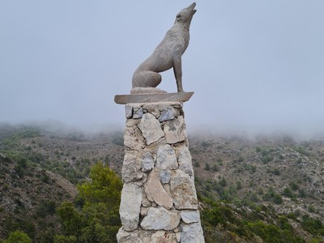

La **Cañada del Lobo** es un complejo recreativo y medioambiental situado en plena Sierra de Torremolinos, haciendo límite con los municipios vecinos de Benalmádena y Alhaurín de la Torre. Este paraje cuenta con un refugio, un albergue y un emblemático mirador presidido por una escultura metálica de un lobo que rinde homenaje a la antigua fauna de la zona.
Durante el recorrido disfrutaremos de un paisaje dominado por pinares mediterráneos, matorral bajo y especies típicas como el palmito. Al coronar el mirador principal, las vistas panorámicas son sencillamente espectaculares, abarcando gran parte de la franja costera y la Hoya de Málaga.

Es una ruta ideal para realizar en otoño, invierno y primavera, permitiendo a los más pequeños entrar en contacto directo con la naturaleza, aprender a valorar la riqueza ecológica de nuestras sierras y fomentar hábitos de vida saludables.
No olvides llevar una bolsita para recoger tus residuos y dejar el entorno exactamente como lo encontraste.